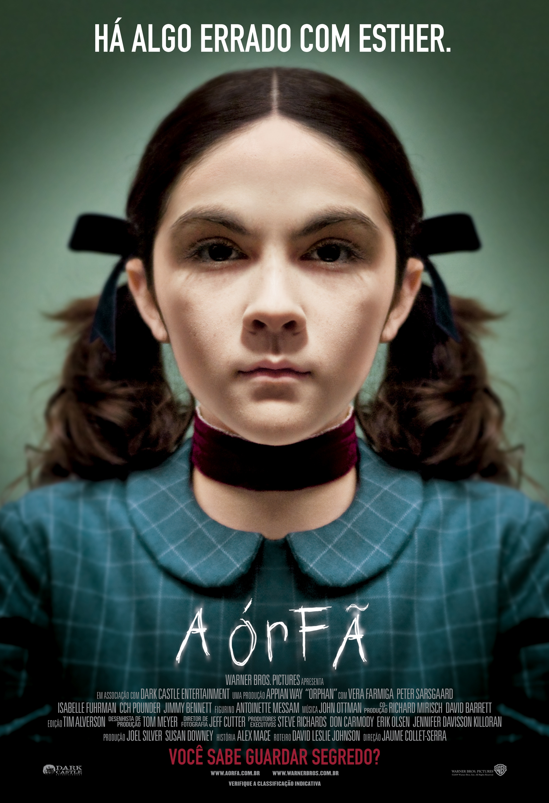

Órfã
Sinopse
Kate (Vera Farmiga) e John Coleman (Peter Sarsgaard) ficam arrasados devido a um trágico aborto. Apesar de já ter dois filhos, Daniel (Jimmy Bennett) e a surda muda Maxime (Aryana Engineer), o casal decide adotar uma criança. Durante uma visita a um orfanato, os dois se encantam pela pequena Esther (Isabelle Fuhrman) de nove anos e optam rapidamente por sua adoção. O que eles não sabiam é que estranhos acontecimentos fazem parte do histórico da menina que passa a se tornar, dia após dia, mais misteriosa. Intrigada, Kate desconfia que Esther não é quem aparenta ser, mas devido ao seu passado de alcoolismo tem dificuldades de provar sua teoria.
Distribuidor
Warner Bros